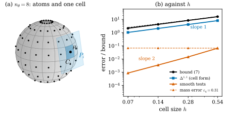

50.2 Gaussian Splats as a Geometric Measure
Goals
- 논문의 Definition 1(Gaussian varifold surrogate)을 정확히 쓰고, 그것이 Chapter 46의 point cloud varifold라는 것과 mass \(q_i\)를 opacity와 따로 두는 이유를 설명할 수 있다.
- forward consistency bound (7)의 세 가정(\(h\), \(\varepsilon_T\), \(\varepsilon_q\))을 말하고, 증명이 cell 단위의 quadrature와 triangle inequality뿐이라는 것을 따라갈 수 있다.
- 단위 sphere에서 bound (7), 실제 bounded Lipschitz distance, smooth test function의 오차를 계산하고, 각각이 cell 크기 \(h\)의 몇 제곱으로 줄어드는지와 mass 오차가 만드는 바닥을 설명할 수 있다.
Prerequisites
- Section 50.1의 첫째 아이디어와 이 장의 기호(Table 50.1.3).
- Chapter 46: plane을 projection으로 보는 것과 plane 사이의 거리(Proposition 46.3.2, Proposition 46.3.4), surface의 varifold(Example 46.4.3)와 point cloud varifold(Definition 46.4.6), bounded Lipschitz distance(Definition 46.7.6, Proposition 46.7.7)와 cell bound(Proposition 46.7.9), covariance에서 읽은 plane((46.8.1), Example 46.8.6).
Motivation
앞 절에서 논문의 첫째 아이디어를 말로 했다. surface 같은 Gaussian을 위치·plane·mass를 가진 원자로 보고, 그 합을 varifold로 읽는다는 것이다. 이 절은 논문 §3을 따라 그 말을 식으로 만든다. 정해야 할 것은 셋이다. 위치는 무엇인가, plane은 어디서 오는가, mass는 무엇인가. 앞의 둘은 Chapter 46에서 이미 답했고, 셋째가 논문의 설계다. 그다음 질문은 자연스럽다. 이렇게 만든 varifold는 Gaussian이 덮고 있는 진짜 surface의 varifold와 얼마나 가까운가? 논문의 답이 forward consistency bound (7)이고, 이 절의 후반은 그 bound가 실제로 얼마나 큰지를 sphere에서 직접 잰다.
From a Gaussian to an Atom
학습된 장면을 \(\mathcal{G} = \{(\mu_i, \Sigma_i, \alpha_i, c_i)\}_{i=1}^N\)이라 하자(논문의 식 (1)). \(\mu_i \in \R^3\)은 중심, \(\Sigma_i\)는 positive definite covariance, \(\alpha_i\)는 opacity, \(c_i\)는 색 같은 appearance parameter다. covariance를 대각화하고 큰 두 축의 eigenspace를 projection으로 쓰면
이다(논문의 식 (2)–(3)). \(u_i, v_i\)는 큰 두 eigenvalue의 unit eigenvector, \(n_i\)는 가장 작은 eigenvalue의 unit eigenvector다. \(\lambda_{ik}\)는 Chapter 29의 scale의 제곱 \(s_k^2\)이고, \(P_i\)는 (46.8.1)의 plane과 같다. 논문은 이 읽기를 \(\lambda_{i1}, \lambda_{i2} \gg \lambda_{i3}\)인 Gaussian, 곧 납작한 disk 같은 Gaussian에만 쓰고 그것을 surface-like라 부른다. 바늘 모양(\(\lambda_{i2} \approx \lambda_{i3}\))이면 plane이 흔들리고(Proposition 46.8.2), 공 모양이면 plane이 없다. §1이 말하는 “dimensionality label”이 이 구분이다(정확한 threshold는 논문에 없다).
위치와 plane이 정해졌으니 남은 것은 mass이다. 논문은 각 Gaussian에 양수 \(q_i\)를 따로 두고 이것을 그 Gaussian이 대표하는 surface 넓이의 quadrature 가중치로 쓴다. 이 \(q_i\)를 geometric mass(기하적 질량)라 한다. opacity \(\alpha_i\)나 ellipse의 넓이와는 다른, refinement에서 장부로 관리하는 양이다.
Definition 50.2.1 (Gaussian varifold surrogate) [ManifoldGS26, Def. 1]. surface-like Gaussian primitive들이 중심 \(\mu_i\), tangent plane \(P_i\), 양의 geometric mass \(q_i\)를 가질 때, \(\R^3\)과 방향 없는 2-plane의 Grassmannian의 곱 \(\R^3 \times G_{2,3}\) 위의 bounded test function \(\varphi\)에 대해
로 정한 \(V_{\mathcal{G}}\)를 Gaussian varifold surrogate(가우스 바리폴드 대리)라 한다.
\(V_{\mathcal{G}}\)는 \(\R^3 \times G_{2,3}\) 위의 measure \(\sum_iq_i\,\delta_{(\mu_i, P_i)}\)이다. 곧 Definition 46.4.6의 point cloud varifold에서 \(x_i = \mu_i\), \(m_i = q_i\)로 둔 것이고, (46.8.3)과 같은 식이다. 차이는 plane의 출처다. point cloud에서는 보통 이웃 점들의 PCA로 plane을 얻지만, 여기서는 Gaussian 자신의 covariance에서 얻는다. 논문은 이 measure를 “surrogate”라 부른다. 진짜 surface의 varifold를 대신하는 대리물이라는 뜻이다.
논문이 강조하는 설계는 \(q_i \ne \alpha_i\)다. opacity는 렌더링 parameter다. alpha compositing에서 더해지지 않고(Example 46.8.3), 시점에 따라 가려지는 정도가 달라지므로 시점에 대해 불변하지도 않다. 그래서 장면의 parameter는 다음처럼 둘로 나뉜다(논문의 식 (5)).
\(P_i\)는 covariance의 eigensystem에서 꺼내고, \(q_i\)는 별도의 quadrature mass이다. opacity와 색은 렌더링 parameter로 남는다.
Example 50.2.2 (one Gaussian, three candidate masses). \(\lambda = (0.09, 0.04, 0.0004)\)(scale \(0.3, 0.2, 0.02\)), 가장 짧은 축 \(n = (0, 0.6, 0.8)\), opacity \(\alpha = 0.4\)인 Gaussian을 보자. plane은 \(P = I - nn^{\mathsf T}\)이고 \(\tr P = 2\), \(P^2 = P\), \(Pn = 0\)이다. mass의 후보는 여럿이다. 논문이 진단과 초기값으로 드는 \(\alpha\sqrt{\lambda_1\lambda_2} = 0.4 \cdot 0.06 = 0.024\), \(1\sigma\) ellipse의 넓이 \(\pi s_1s_2 = 0.1885\), normal 방향에서 본 렌더링 coverage \(\int\alpha g = 2\pi\alpha s_1s_2 = 0.1508\)(Example 46.8.3)이다. 셋 다 \(s_1s_2\)에 상수(\(\alpha\), \(\pi\), \(2\pi\alpha\))를 곱한 것이라 서로 상수배만 다르지만, 어느 것도 이 Gaussian이 대표하는 surface 조각의 넓이일 이유는 없다. forward consistency(아래)가 요구하는 것은 \(q_i\)가 그 조각의 넓이 \(A(C_i)\)에 가깝다는 것이다.
Verification: verify/v-50-2-geometric-measure.py
Forward Consistency
이제 \(V_{\mathcal{G}}\)가 진짜 surface의 varifold에 가까울 조건을 보자. Figure 50.2.1의 (a)가 그 상황이다. 회색 sphere를 위도와 경도의 선으로 cell \(C_i\)로 나누고, cell마다 원자 하나(검은 점 \(\mu_i\))를 둔다. 하늘색으로 칠한 cell 하나와 그 원자의 plane \(P_i\)(파란 평행사변형)를 보면, cell의 점 \(x\)는 원자에서 조금 떨어져 있고(위치 오차) 그 점의 tangent plane \(P(x)\)는 \(P_i\)와 조금 기울어 있다(plane 오차). mass \(q_i\)가 cell의 넓이와 다르면 mass 오차도 생긴다. 논문의 bound는 이 세 오차로 쓰여 있다.
Proposition 50.2.3 (forward consistency) [ManifoldGS26, §3, (6)–(7), App. A.1]. \(M \subseteq \R^3\)이 compact \(C^2\) embedded surface이고, \(A\)가 그 area measure(\(A = \mathcal{H}^2 \llcorner M\)), \(P(x)\)가 \(x \in M\)에서의 tangent plane의 projection이라 하자. \(M\)의 Borel partition \(\{C_i\}\)와 원자 \((\mu_i, P_i, q_i)\)가 모든 \(i\)에서
를 만족하면, \(\norm{\varphi}_\infty \le 1\)이고 Lipschitz 상수가 \(1\) 이하인 모든 test function \(\varphi\)에 대해
이다. \(V_M\)은 논문의 식 (13)으로, Example 46.4.3의 surface의 varifold \(v(M, 1)\)이다. Lipschitz 상수는 \(\R^3 \times G_{2,3}\)의 거리 \(\abs{x - y} + \norm{P - Q}_F\)에 대한 것으로 읽는다(논문은 거리를 밝히지 않는다). 증명은 이 합보다 작은 거리, 예를 들어 \(\max\)나 \(\sqrt{\abs{x - y}^2 + \norm{P - Q}_F^2}\)로 읽어도 그대로 성립한다.
이 명제가 말하는 것은 이렇다. 각 Gaussian이 자기 cell 안의 모든 점에서 \(h\) 이내에 있고, covariance의 plane이 cell 안의 tangent plane과 \(\varepsilon_T\) 이내로 맞고, mass의 오차가 모두 합쳐 \(\varepsilon_q\) 이하라면, Gaussian varifold와 surface varifold는 어떤 test function으로 재도 \(A(M)(h + \varepsilon_T) + \varepsilon_q\) 이내로 같은 값을 준다. covariance → varifold라는 읽기가 “기대한 대로” 동작한다는 뜻에서 forward consistency라 부른다. 논문은 이것이 학습된 3DGS가 이 가정을 저절로 만족한다는 말이 아니라고 분명히 적는다. 그리고 “임의로 최적화된 Gaussian 장면에 대한 복원 정리가 아니다”라고 부록에서 다시 말한다.
Proof sketch. 논문의 부록 A.1은 cell 넓이로 쓴 중간 항을 끼운다.
(논문의 식 (14)). 그러면 두 단계다.
첫 줄(논문의 식 (15))은 Lipschitz 조건과 (50.2.4)의 두 sup, 둘째 줄(식 (16))은 \(\abs{\varphi} \le 1\)을 쓴다. triangle inequality로 합치면 (50.2.5)다. 이것은 Proposition 46.7.9의 증명과 같고, (50.2.5)는 그 명제의 둘째 형태를 Frobenius norm으로 쓴 것이다. 논문의 말로는 “cell 넓이의 quadrature와 triangle inequality뿐”이다.
Remark 50.2.4 (reading (7) as a distance). (50.2.5)의 왼쪽에서 \(\varphi\)에 대한 sup을 잡으면 Definition 46.7.6의 bounded Lipschitz distance가 된다(거리를 \(\abs{x - y} + \norm{P - Q}_F\)로 준 판). 따라서 (50.2.5)는 \(\Delta^{1,1}(V_{\mathcal{G}}, V_M) \le A(M)(h + \varepsilon_T) + \varepsilon_q\)와 같다. operator norm은 Frobenius norm 이하이므로 Chapter 46의 거리로도 같은 bound가 성립한다. mass가 bounded이고 모든 원자가 \(M\)의 \(h\)-neighborhood라는 compact set 안에 있으므로, Proposition 46.7.7에 의해 \(h, \varepsilon_T, \varepsilon_q \to 0\)이면 \(V_{\mathcal{G}}\)가 \(V_M\)으로 weak-* 수렴한다. 논문도 §1(기여 2)과 부록 A.2에서 이 거리를 “bounded-Lipschitz”라 부른다. 다만 \(\R^3 \times G_{2,3}\)의 거리를 무엇으로 두는지는 적지 않는다. 그 거리를 \(\abs{x - y} + \norm{P - Q}_F\)로 읽는 것과 BLM17 Lemma 6.1과의 대응은 우리의 해석이다(Table 46.9.1).
How Tight Is the Bound?
bound가 맞다는 것과 쓸모 있다는 것은 다르다. 같은 sphere tiling에서 bound와 실제 거리를 함께 계산해 보자. Example 46.8.6은 이것을 Chapter 46의 operator norm으로 했다. 여기서는 논문의 Frobenius norm으로 하고, smooth test function과 mass 오차를 더한다.
Example 50.2.5 (Gaussians tiling the unit sphere, in the paper's metric). unit sphere(\(A(M) = 4\pi\))를 위도 \(n_\theta\)칸, 경도 \(2n_\theta\)칸으로 나누고 cell마다 parameter의 가운데 점 \(\mu_i\), 그 점의 tangent plane \(P_i\), 정확한 cell 넓이 \(q_i = A(C_i)\)를 준다(\(\varepsilon_q = 0\)). 세 가지를 계산한다. bound (7), 실제 거리 \(\Delta^{1,1}\), 그리고 smooth test function 20개(\(\varphi = \tfrac12\sin(\inner{a}{x} + c) + \tfrac14\inner{B}{P}_F\), \(\abs{a} = \norm{B}_F = 1\), 무작위) 가운데 가장 큰 \(\abs{V_{\mathcal{G}}(\varphi) - V_M(\varphi)}\)이다. \(\Delta^{1,1}\)은 두 값 사이에 있다. 위로는 (46.7.6)의 첫 형태, 곧 \(\sum_i\int_{C_i}(\abs{x - \mu_i} + \norm{P(x) - P_i}_F)\,dA\)가 있다. 아래로는 원자에서 \(0\)인 test function \(\min\big(1, \min_i(\abs{x - \mu_i} + \norm{S - P_i}_F)\big)\)의 적분이 있다.
| \(n_\theta\) | \(h\) | \(\varepsilon_T\) | bound (7) | \(\Delta^{1,1}\) | smooth |
|---|---|---|---|---|---|
| 4 | 0.541 | 0.737 | 16.06 | 7.95–8.02 | 0.0659 |
| 8 | 0.276 | 0.386 | 8.32 | 4.09 | 0.0145 |
| 16 | 0.139 | 0.196 | 4.20 | 2.05 | 0.0035 |
| 32 | 0.069 | 0.098 | 2.10 | 1.03* | 0.00087 |
원자는 \(32\), \(128\), \(512\), \(2048\)개다. \(\varepsilon_T\)는 Chapter 46의 값(\(0.521, 0.273, 0.138\))의 \(\sqrt2\)배다. \(n_\theta = 8, 16\)에서는 위와 아래가 셋째 자리까지 같아 한 값만 적었고, *는 위의 값만 계산한 것이다. 두 적분은 원자에서 꺾이는 함수의 적분이라 cell마다 등면적 격자 \(96 \times 96\)점으로 계산했다(셋째 자리까지 수렴). mass에 높이를 따라가는 \(5\%\)의 오차 \(q_i = A(C_i)(1 + 0.05z_i)\)를 넣으면 \(\varepsilon_q = 0.34, 0.32, 0.316, 0.315\)(극한 \(0.1\pi = 0.314\))이고, smooth test function의 오차는 \(0.066\)–\(0.067\)에서 더 줄지 않는다.
Verification: verify/v-50-2-geometric-measure.py
Figure 50.2.1의 (b)가 이 표를 log-log로 그린 것이다. 위에서부터 읽자. 검은 선이 bound (7), 파란 선이 \(\Delta^{1,1}\), 주홍 선이 smooth test function의 오차다. 넷을 짚는다.
- bound는 실제 거리의 약 \(2\)배다. 네 수준 모두에서 bound/\(\Delta^{1,1}\)이 \(2.00\)–\(2.05\)다. sup은 cell에서 가장 먼 점을 쓰지만, 거리를 정하는 것은 cell의 평균적인 점이다.
- 그러나 order는 맞다. 파란 선의 기울기가 \(1.00\)이다. 원자를 \(4\)배로 늘리면 거리가 반이 된다. 가장 나쁜 Lipschitz test function(가장 가까운 원자까지의 거리)은 원자를 cell 가운데 두어도 줄일 수 없다. 그래서 \(\Delta^{1,1}\) bound로서 (7)의 \(O(h)\)는 날카롭다.
- smooth test function은 \(h^2\)만 본다. 주홍 선의 기울기는 \(2.10\)이다. 원자가 cell의 가운데에 있으면 1차 오차가 서로 지워진다(1차원의 midpoint rule과 같다. Exercise 50.2.4). 그래서 “실제 오차는 \(h^2\)인데 bound는 \(h\)라 느슨하다”는 말은 test function을 하나 고정했을 때만 맞다.
- mass 오차는 바닥을 만든다. 주홍 점선은 refinement를 해도 \(0.067\)에 머문다. \(\varepsilon_q\)는 cell을 잘게 나눠도 줄지 않는 항이기 때문이다. 검은 점선(bound + \(\varepsilon_q\))도 같은 이유로 \(h \to 0\)에서 \(\varepsilon_q = 0.31\)로 간다.

Summary
- surface-like Gaussian은 원자 \((\mu_i, P_i, q_i)\)가 되고, 장면은 Gaussian varifold surrogate \(V_{\mathcal{G}} = \sum_iq_i\delta_{(\mu_i, P_i)}\)다(Definition 50.2.1). 이것은 point cloud varifold이고, plane은 covariance에서 온다.
- geometric mass \(q_i\)는 opacity가 아니다. 논문의 식 (5)는 기하 \((\mu_i, P_i, q_i)\)와 렌더링 \((\alpha_i, c_i)\)를 나눈다. \(q_i\)의 초기화와 갱신 규칙은 논문에 없다.
- cell마다 위치 오차 \(h\), plane 오차 \(\varepsilon_T\)(Frobenius), mass 오차의 합 \(\varepsilon_q\)가 통제되면 \(\Delta^{1,1}(V_{\mathcal{G}}, V_M) \le A(M)(h + \varepsilon_T) + \varepsilon_q\)다(Proposition 50.2.3). 증명은 cell quadrature와 triangle inequality다.
- unit sphere에서 이 bound는 실제 \(\Delta^{1,1}\)의 약 \(2\)배이고 order \(h\)는 맞다. smooth test function 하나의 오차는 \(h^2\)로 줄고, mass 오차는 refinement로 줄지 않는 바닥을 만든다(Figure 50.2.1).
다음 절에서는 refinement가 이 varifold를 얼마나 바꾸는지 본다. split·merge·prune에서 무엇을 보존해야 \(\varepsilon_q\)가 커지지 않는지가 논문의 Proposition 1과 prune bound (10)이다.
Quick check
Exercise 50.2.1 ★ 두 Gaussian의 normal이 \(10^\circ\) 다르다. 논문의 거리 \(\norm{P - Q}_F\)와 Chapter 46의 거리 \(\norm{P - Q}\)를 구하여라. 모든 cell에서 normal 오차가 \(10^\circ\) 이하라면 \(\varepsilon_T\)는 얼마로 잡으면 되는가?
Solution
\(P - Q\)의 eigenvalue는 \(\pm\sin10^\circ\)와 \(0\)이다(Proposition 46.3.4). 그래서 operator norm은 \(\sin10^\circ = 0.1736\), Frobenius norm은 \(\sqrt2\sin10^\circ = 0.2456\)이다. \(\varepsilon_T = 0.2456\)으로 잡으면 된다.
Verification: verify/v-50-2-geometric-measure.py
Exercise 50.2.2 ★ 넓이 \(A(M) = 2\) m²인 surface를 Gaussian이 덮고 있고, \(h = 0.01\) m, normal 오차는 \(5^\circ\) 이하, mass 오차는 넓이의 \(3\%\)라 하자. bound (7)을 계산하고 어느 항이 가장 큰지 말하여라. 같은 장면을 cm 단위로 쓰면 무엇이 달라지는가?
Solution
\(\varepsilon_T = \sqrt2\sin5^\circ = 0.1233\), \(\varepsilon_q = 0.06\)이므로 bound는 \(2(0.01 + 0.1233) + 0.06 = 0.3265\)다. plane 항 \(2 \cdot 0.1233 = 0.247\)이 가장 크다. cm로 쓰면 \(A(M) = 20000\), \(h = 1\), \(\varepsilon_q = 600\)이 되어 bound는 \(20000(1 + 0.1233) + 600 = 23065\)이다. m 단위의 값을 \(10^4\)배한 \(3265\)와 같지 않다. 위치 항은 길이의 단위를 따라가지만 plane 항은 무차원이라, 단위를 바꾸면 두 항의 비중이 바뀐다. 거리 \(\abs{x - y} + \norm{P - Q}\)는 장면의 크기를 정해야 의미가 있다.
Verification: verify/v-50-2-geometric-measure.py
Exercise 50.2.3 ★ bound (7)의 mass 항 \(\varepsilon_q\)는 줄일 수 없음을 보여라. 곧 모든 \(q_i - A(C_i)\)가 같은 부호이면 어떤 test function이 \(\abs{V_{\mathcal{G}}(\varphi) - \widetilde V(\varphi)} = \sum_i\abs{q_i - A(C_i)}\)를 주는가?
Solution
상수함수 \(\varphi \equiv 1\)은 \(\norm{\varphi}_\infty = 1\), Lipschitz 상수 \(0\)이므로 허용된다. 그때 \(V_{\mathcal{G}}(1) - \widetilde V(1) = \sum_i(q_i - A(C_i))\)이고, 부호가 모두 같으면 그 절댓값이 \(\sum_i\abs{q_i - A(C_i)}\)다. 이것은 \(\varphi \equiv 1\)이 “total mass”를 재기 때문이다. bounded Lipschitz distance는 mass가 다른 두 measure를 그 차이만큼 떼어 놓는다(Example 46.7.8(b)).
Exercise 50.2.4 ★★ \([0, 1]\)을 길이 \(L = 1/N\)인 cell \(N\)개로 나누고 각 cell의 가운데에 mass \(L\)인 원자를 둔다. (a) \(C^2\) 함수 \(f\)에 대해 오차가 \(\abs{f''}_\infty L^2/24\) 이하임을 보여라. (b) 원자까지의 거리 \(f(x) = \min_i\abs{x - m_i}\)(1-Lipschitz)의 오차를 구하여라. 이것이 Figure 50.2.1의 기울기 \(2\)와 \(1\)과 어떻게 대응하는가?
Solution
(a) cell \([m - L/2, m + L/2]\)에서 \(f(x) = f(m) + f'(m)(x - m)\) \(+ \tfrac12f''(\xi)(x - m)^2\)이다. 1차 항은 원자에 대해 좌우가 반대 부호라 적분이 \(0\)이다(원자가 가운데에 있어서). 남은 항은 \(\tfrac12\abs{f''}_\infty\int(x - m)^2 = \abs{f''}_\infty L^3/24\) 이하이고, \(N = 1/L\)개를 더하면 \(\abs{f''}_\infty L^2/24\)다. (b) 원자에서 \(f = 0\)이므로 원자 쪽 합은 \(0\)이고, 적분은 cell마다 \(2\int_0^{L/2}t\,dt = L^2/4\), 모두 \(L/4\)다. 오차가 \(L\)에 비례한다. smooth function은 원자를 가운데 둔 효과로 \(h^2\)를 보고, 원자에서 꺾이는 Lipschitz 함수는 \(h\)를 본다. bounded Lipschitz distance는 sup이므로 후자를 고른다.
Verification: verify/v-50-2-geometric-measure.py